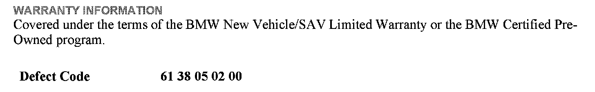
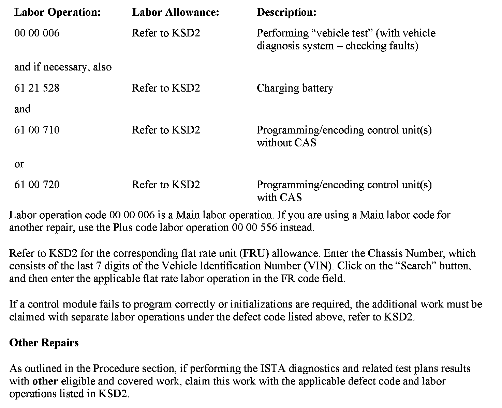

Wipers/Washers - Erratic Rain-Light Operation/Inop.
SI B61 04 12General Electrical Systems
January 2012
Technical Service
SUBJECT
Implausible Windshield Wiping While Rain-Light Sensor Is Active
MODEL
E82, E88 (1 Series)
E89 (Z4)
E90, E91, E92, E93 (3 Series)
Vehicles produced from February 28, 2011 to September 29, 2011, or with an integration level lower than E89X-11-09-501
SITUATION
The windshield wipers have an implausible operation while the rain-light sensor is active, including the following symptoms:
^ The rain sensor is inoperative.
^ The wiper stages do not change based on how heavy the rain is.
Note:
No fault codes are stored for the rain-light sensor.
CAUSE
JBE3 (Junction Box Electronics) software error
PROCEDURE
Do not replace parts.
1. Perform a vehicle test with ISTA (Integrated Service Technical Application) and troubleshoot any faults related to the windshield wipers or the rain-light sensor.
2. If no faults are stored, program the vehicle using ISTA/P 2.43 or later.
Note that ISTA/P will automatically reprogram and code all programmable control modules that do not have the latest software.
For information on programming and coding with ISTA/P, refer to CenterNet / Aftersales / Workshop Technology / Vehicle Programming.


WARRANTY INFORMATION